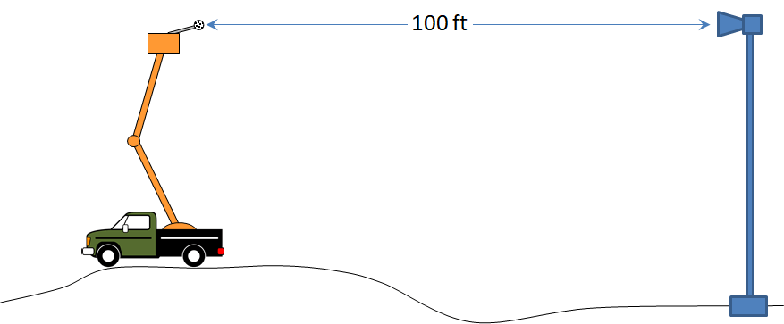

HTML BuilderIf you want to understand how effective your outdoor warning system is, the first step is to understand your siren output levels. Manufacturers often do their measurements in a lab, under controlled conditions. Things may change once the siren is installed. How the siren behaves in the real world is what matters to the people you are trying to alert. That is where source measurements come into play.
The ANSI Standard S12.14 provides a methodology to reliably and repeatedly determine the output sound levels for sirens of any size. Some specialty equipment is required, including Sound Level Meters (SLM) and a bucket truck capable of reaching to the height of the sirens (typically about 50 feet). The measurements only take a few hours to complete and provide assurance you are getting the output you need from your sirens.

The procedure is simple. First, attach the microphone from the SLM to the end of a short pole. You’ll need a microphone cable, and a 5 foot long tomato stake and duct tape work well. Then move the bucket truck 100 feet from the siren and raise the bucket to the height of the siren with the operator in the bucket. As the siren is sounded, the operator moves the microphone around slowly , collecting data over a wide area – a process known as spatial averaging. This is a crucial, and often neglected, part of the measurement process. The results are written onto the ANSI Sheet, with the average and the maximum levels reported. Acoustic Analytics recommends using the average levels for siren coverage calculations.
Some types of sirens require a different and more complex process. If you have rotating sirens where the rotation feature can not be turned off, the process is more complex. The first step is to create a system to hold 5 microphones, each 10 feet apart. This microphone array is then raised with the bucket truck and hung in front of the siren (again, 100 feet away). The middle microphone is aligned with the siren center line. Signals from all 5 microphones are then used to determine the output level of the siren.
HTML Builder